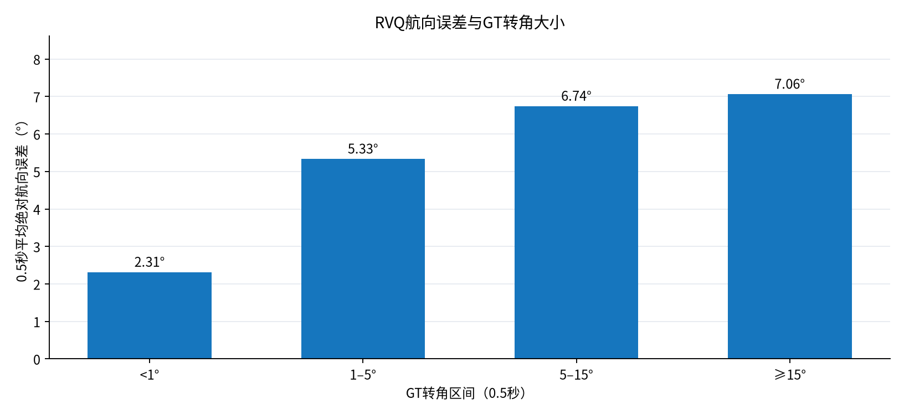
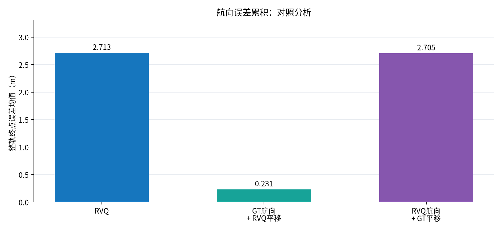
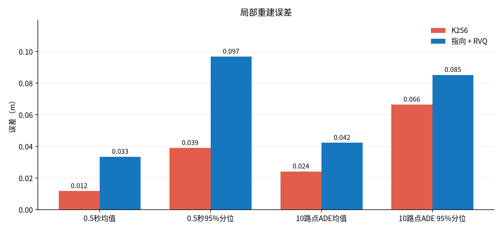
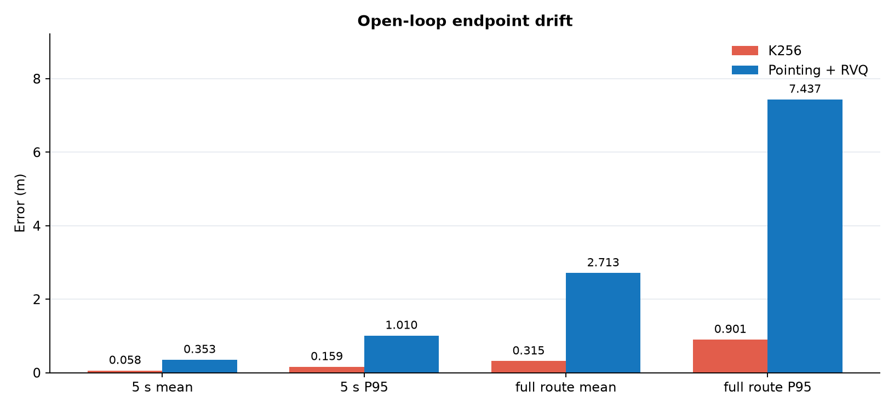
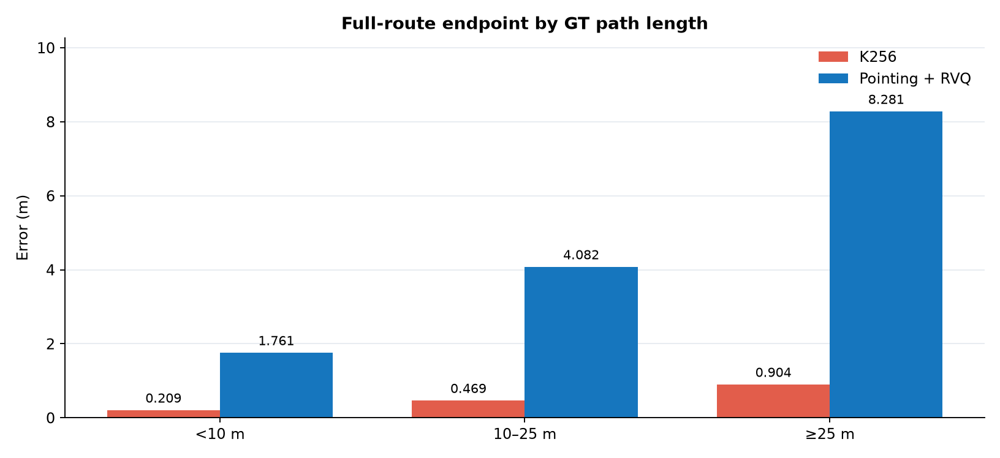
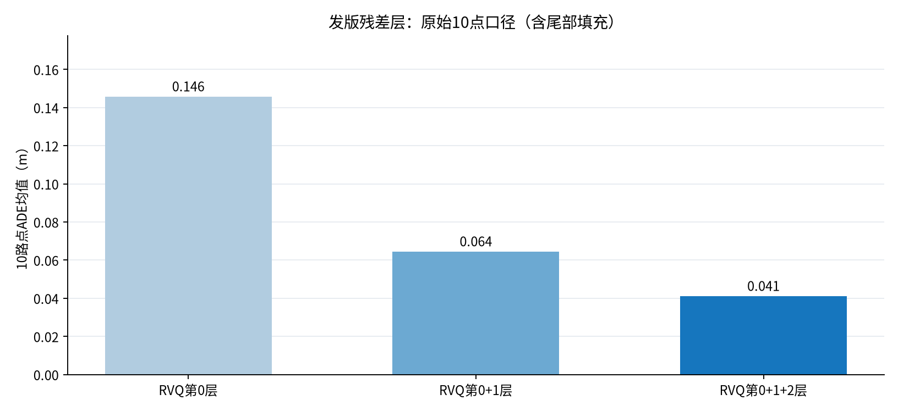
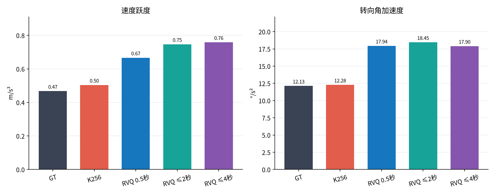
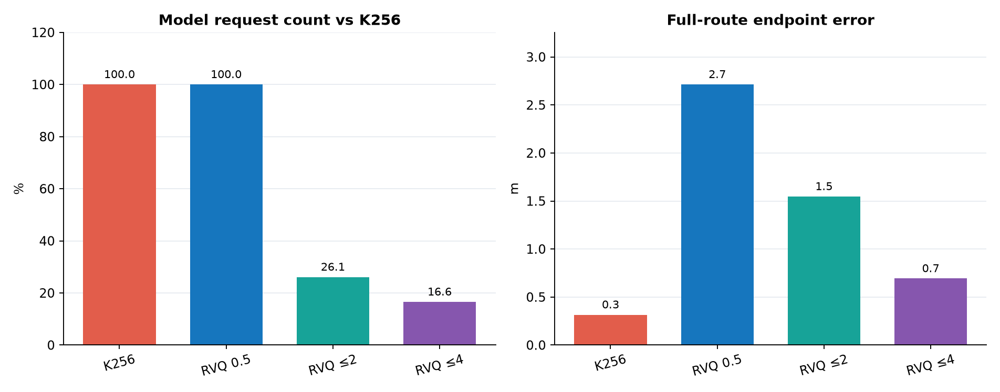

RVQ 占优
轨迹 1 · GT 长度 7.3 m
30 帧 · 终点误差 K256 0.60 m / RVQ 0.23 m
整轨 ADE：K256 0.26 m · RVQ 0.13 m
整轨 ADE 更低：RVQ；上方类别只按终点误差定义。
绘制路点：K256 30 个 · RVQ 30 个（各含共同起点）
这里包含原发版编码对照、2026-10-15 的 HM3D 量化研究，以及 2026-10-24 针对双足机器人微动作问题的深圳采样研究。请先按当前执行需求阅读最新结论。
离线量化评估公开方法与结果深圳办公室的离线研究；未运行视觉策略或真机。下方 HM3D 结果来自不同数据，不能直接跨页比较数字。
按“结论 → 怎么测 → 5点与10点 → 角度 → 执行方式 → 三类轨迹”的顺序阅读。60 个编码变体、16 份码本与完整审计可按需展开。
下方是历史原发版对照：8,600 条轨迹 / 60 场景；10 月 15 日研究另用 3,760 条轨迹 / 24 测试场景。两页使用不同样本，不能跨页相减。
Pointing+RVQ 提供 K256 没有的 Object / Affordance 指向标签和一次预测未来 10 个路点的表示。图中的轨迹只由 3 个 RVQ 动作 token 解码；两个 Pointing token 不参与坐标重建。这些额外信息可能对视觉导航训练有用，但本实验不包含训练或模型推理，不能据此判断闭环导航成功率。RVQ 在 2.0% 的配对轨迹上取得更低终点误差，动图中也保留了这类例子。
hm3d_qc_retained_k256_export_v1，属于 HM3D-all V2 发版数据。这里的 V1 是导出格式版本，不把它当作另一套 HM3D 轨迹。对每一个 2 Hz 源视频帧，编码器都从该帧的 GT 位姿重新开始，沿真实未来轨迹逐段采样。每个 0.5 秒源段按水平位移不超过 0.25 m、转角不超过 30°细分，取先遇到的 10 个未来点；当前帧本身不计入这 10 点。下一帧又从下一帧的 GT 位姿生成自己的未来 10 点，因此窗口逐帧滑动、彼此重叠，不是编码完第 1–10 点再从第 10 点编码第 11–20 点。10 点平均走 1.31 m，平均覆盖 3.29 秒；轨迹到达终点后不足 10 点时重复终点，用有效掩码标记填充。
每点用当前机体坐标下的前进、向左位移和相对航向角表示。10 点变成 30 维相邻 SE(2) 增量，由三层、每层 256 项的 RVQ 选出 3 个索引；解码时相加码字、除以权重，再逐步复合回 10 个局部位姿。Object 与 Affordance 是另外两个指向 token，不参与轨迹坐标。这里的本地编码器用宽度 16 的搜索，目标是10 点平均位置误差 + 0.3 × 末点方向误差；本次使用的固定码本包不含训练时的编码器实现。LightNav-0 论文给出同类整体轨迹目标。
waypoint_t_sec；本站据此提取 0.5 秒动作进行同时间评估。149,089 / 393,272 个动作在首个 0.5 秒内有多个细分路点，故“第 1 个路点”不总等于下一视频帧。若机械地把第 1 点当成 0.5 秒动作，离线整轨终点误差均值为 3.93 m；这个用法没有与原始时间戳对齐。官方部署说明是每次执行首个路点一个控制周期、下一帧再规划，其余点用于前瞻，通常采用 4 Hz 检查点训练帧率；这里的 2 Hz 积分不是那个控制器的闭环成绩。在 393,272 个非终止帧中，393,272 个都存在有效且恰好位于 0.5 秒的 GT 路点；与下一个 GT 帧的位置及朝向对齐失败 0 个。因而巨大的转向漂移不能归咎于错取了 0.5 秒目标。修正尾部填充插值后，RVQ 单步平均绝对航向误差 4.48°，K256 为 0.36°；RVQ 误差中位数 2.11°、P95 14.98°。整轨终点航向误差均值分别为 32.68° 与 3.34°。


逐步积分 RVQ 的整轨终点误差为 2.713 m；若每步只把朝向替换为 GT，保留 RVQ 平移，降为 0.231 m；若保留 RVQ 朝向、只把平移替换为 GT，则为 2.705 m。这表明本实验的大部分长程位置漂移由方向误差累积驱动；两个反事实不是可相加的误差分解。
编码目标只直接惩罚末点方向，而重规划执行频繁使用窗口前部路点；尾部填充点也进入本地编码搜索的 10 点目标。两者都是需要做重编码消融的目标设计风险，不能仅凭相关性认定为已证实的单一根因。当前的 training_eligible 只检查 10 点 ADE、终点 FDE 和末点方向阈值，没有逐步航向门槛；在已标为可训练的 390,578 个动作中，0.5 秒平均航向误差仍为 4.47°。完整聚合诊断见 rvq_semantics_audit.json。


| 指标 | 配对数 | K256 均值 m | RVQ 均值 m | K256 P95 m | RVQ P95 m | 定义 |
|---|---|---|---|---|---|---|
| 单步位置误差 · 0.5 秒 | 393,272 | 0.012 | 0.033 | 0.039 | 0.097 | 同一 GT 帧；已覆盖的 RVQ 帧 |
| 局部 10 路点 ADE | 393,272 | 0.024 | 0.042 | 0.066 | 0.085 | 按 RVQ 实际时间戳；忽略终点填充 |
| 5 秒段终点误差 | 35,401 | 0.058 | 0.353 | 0.159 | 1.010 | 每段从 GT 起点重置 |
| 整条轨迹终点误差 | 8,600 | 0.315 | 2.713 | 0.901 | 7.437 | 仅两者可完整计算的相同轨迹 |
局部 10 路点 ADE 的距离口径：在这 393,272 个有效窗口中，GT 从当前帧沿有效路点平均行进 1.31 m（中位数 1.45 m，P95 2.06 m）；平均覆盖 3.29 秒。距离按相邻 GT 路点的水平位移累加，包含当前帧到首个路点，忽略终点重复填充；它是行进路程，不是起终点直线距离。
整条轨迹统计使用 8,600 条相同轨迹；0.5 秒 RVQ 路点可插值覆盖率 100.00%。方向角和进一步分层数据见 机器可读结果。


路径长度分层样本数：<10 m 为 5,229 条，10–25 m 为 3,284 条，≥25 m 为 87 条；长路径层样本较少。
本节蓝色为原发版 RVQ。改进后 5 点方案的绿色轨迹与三类统计见最新研究轨迹。默认显示最终轨迹；点击播放观察误差怎样累积。
此前的 5 条演示轨迹中有 4 条属于 K256 终点误差更小的案例。现将整条轨迹的终点误差差值 Δ＝RVQ−K256 按 ±0.2 m 分组，每组展示 2 条；差值只决定分类，卡片同时给出整轨 ADE，以免终点偶然接近 GT 掩盖途中偏差。
| 类别 | 轨迹数 | 占 8,600 条比例 |
|---|---|---|
| RVQ 占优 | 56 | 0.65% |
| 接近 | 440 | 5.12% |
| K256 占优 | 8,104 | 94.23% |
RVQ 占优表示 Δ < −0.2 m；接近表示 |Δ| ≤ 0.2 m；K256 占优表示 Δ > 0.2 m。0.2 m 是便于观察的展示阈值，并非统计显著性界限。若只看差值符号，RVQ 严格胜 176 条（2.05%）。三组数量来自全部配对样本；动图每组等量展示，不能用动图比例估计总体表现。
在 RVQ 终点优势超过 0.2 m 的 56 条中，有 29 条的整轨 ADE 也更低，其余 27 条仅终点占优。前两张动图各展示一种，说明终点更准不一定代表途中也更贴近 GT。
每组从 GT 路程 5–10 m 和 10–25 m 各选一条，限制至 140 帧以内，并优先选终点差值接近对应候选中位数且来自不同场景的轨迹。RVQ 占优组再区分整轨 ADE 是否同时占优。候选池保留全部 RVQ 严格胜例，其余按固定哈希抽样约 1/15。下面的案例用于观察不同误差形态，不代替全样本统计。
黑色为 GT，红色为 K256，蓝色为 RVQ；浅灰线给出完整 GT 路径，空心圆标出 GT 终点。三条轨迹从同一真实起点出发，使用相同世界坐标尺度。下方路点数指最终曲线上绘制的世界坐标点，含共同起点；K256 的 STOP 不增加路点。RVQ 每个非终止帧原有 10 个局部路点，本动图在 0.5 秒处插值得到一个移动点后逐帧积分，并未把每帧的 10 个点全部画进曲线。长轨迹的播放画面最多抽取 75 帧，但最终画面包含全部路点。三条路径共同平移、旋转，使起点朝向朝上；距离保持不变。箭头显示当前朝向，网格和右上角比例尺都以米计，不表示 NavMesh 墙体。
30 帧 · 终点误差 K256 0.60 m / RVQ 0.23 m
整轨 ADE：K256 0.26 m · RVQ 0.13 m
整轨 ADE 更低：RVQ；上方类别只按终点误差定义。
绘制路点：K256 30 个 · RVQ 30 个（各含共同起点）
64 帧 · 终点误差 K256 0.68 m / RVQ 0.29 m
整轨 ADE：K256 0.29 m · RVQ 0.44 m
整轨 ADE 更低：K256；上方类别只按终点误差定义。
绘制路点：K256 64 个 · RVQ 64 个（各含共同起点）
22 帧 · 终点误差 K256 0.29 m / RVQ 0.21 m
整轨 ADE：K256 0.11 m · RVQ 0.17 m
整轨 ADE 更低：K256；上方类别只按终点误差定义。
绘制路点：K256 22 个 · RVQ 22 个（各含共同起点）
55 帧 · 终点误差 K256 0.78 m / RVQ 0.70 m
整轨 ADE：K256 0.36 m · RVQ 0.43 m
整轨 ADE 更低：K256；上方类别只按终点误差定义。
绘制路点：K256 55 个 · RVQ 55 个（各含共同起点）
29 帧 · 终点误差 K256 0.06 m / RVQ 1.69 m
整轨 ADE：K256 0.04 m · RVQ 0.82 m
整轨 ADE 更低：K256；上方类别只按终点误差定义。
绘制路点：K256 29 个 · RVQ 29 个（各含共同起点）
78 帧 · 终点误差 K256 0.21 m / RVQ 3.42 m
整轨 ADE：K256 0.19 m · RVQ 2.94 m
整轨 ADE 更低：K256；上方类别只按终点误差定义。
绘制路点：K256 78 个 · RVQ 78 个（各含共同起点）
在同一批 8,600 条轨迹上，把 K256 每 0.5 秒动作、RVQ 每帧重新取 0.5 秒动作，以及 RVQ 一次最多执行 2 秒或 4 秒的路点序列，全部采样到同一个 2 Hz 时间网格。后两种模式在有效路点时间不足时提前重规划，实际平均每次分别执行 1.92 秒和 3.02 秒。


| 路径 | 平均速度 jerk m/s³ | 平均转向角加速度 °/s² | 速度 jerk 相对 GT 偏差 m/s³ | 整轨终点误差均值 m | 模拟推理请求数 |
|---|---|---|---|---|---|
| GT | 0.467 | 12.13 | 0.000 | 0.000 | — |
| K256 | 0.504 | 12.28 | 0.169 | 0.315 | 393,272 |
| RVQ 每 0.5 秒重规划 | 0.666 | 17.94 | 0.548 | 2.713 | 393,272 |
| RVQ 最多执行 2 秒 | 0.747 | 18.45 | 0.695 | 1.547 | 102,609 |
| RVQ 最多执行 4 秒 | 0.758 | 17.90 | 0.726 | 0.693 | 65,152 |
指标先对每条轨迹求相邻 2 Hz 速度的加速度变化、转向角速度变化，再对轨迹等权平均。RVQ 最多执行 2 秒相对 K256 的平均速度 jerk 差值，按场景 bootstrap 的 95% 区间为 [0.237, 0.249] m/s³；转向角加速度差值区间为 [5.97, 6.36] °/s²。完整分布与定义见 流畅度结果。
这批轨迹含 393,272 个 0.5 秒动作。K256 逐步推理需要 393,272 次请求；RVQ 最多执行 2 秒需要 102,609 次（26.1%），最多执行 4 秒需要 65,152 次（16.6%）。按官方五 token 输出计，二者生成 token 总量分别为 K256 的 1.30 倍和 0.83 倍。
如果把每次完整模型请求耗时分别记为 LK 与 LR，2 秒策略只有在 LR/LK < 3.83 时才减少累计模型用时；4 秒策略的门槛为 6.04。2 秒方案虽然减少请求，生成的 token 总量仍比 K256 多 30.5%。模型结构、图像输入、五 token 解码以及机器人是否能边行进边推理，都会改变实际任务完成时间。本页没有实测模型或机器人墙钟耗时，因而只报告请求数与临界条件。
官方 LightNav-0 说明把 10 个 SE(2) 路点交给低层控制器；本页的 2 Hz 直接插值回放不代表它的真实 MPC 跟踪质量。
| 维度 | K256 | Pointing+RVQ |
|---|---|---|
| 动作表示 | 每 0.5 秒一个机体增量 token；末帧 STOP=0 | 每帧 3 个 RVQ token 解出 10 个局部路点；另有 Object / Affordance 2 个 token |
| 优点 | 动作序列短，直接适配 2 Hz 控制；本次量化漂移较小 | 多步局部几何和语义指向更丰富；3 层残差提高路点重建质量 |
| 代价 | 单 token 无显式目标指向和多步路点 | 5 token/帧、时间间隔不固定；需处理 loss mask、点不可见和终点哨兵 |
以发版的 401,872 个采样帧计算，K256 每帧 1 个动作 token，Pointing+RVQ 每帧 5 个 token。这是序列预算对比，RVQ 同时编码了更多任务信息，因此不是压缩率的同义词。Object 投影可见率 24.8%，Affordance 普通可投影点比例 44.8%；其余状态包括遮挡、转向、停止等，并非统一视为错误。
上传的 K256 发版日志给出的全保留集 P95 数值使用原报告流程；本页数字来自新的配对场景样本和统一时间轴，不能把两组数值直接拼成一组试验。
数据来源：HM3D K256 原发版页 · 固定版本 RVQ 码本 · LightNav-0 官方仓库。